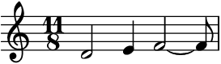
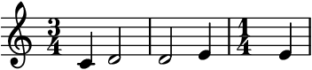
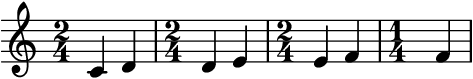
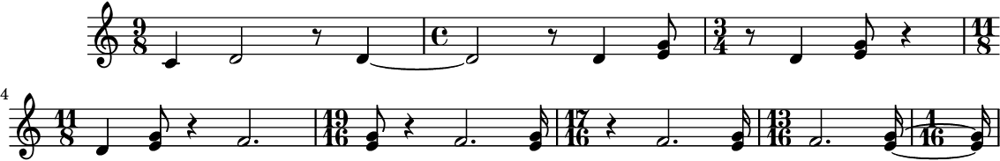
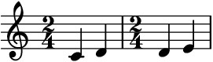
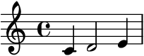
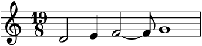
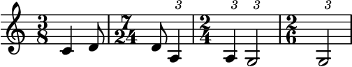

auxjad.LoopWindowByElements¶
-
class
auxjad.LoopWindowByElements(container: abjad.core.Container.Container, *, window_size: int, step_size: int = 1, max_steps: int = 1, repetition_chance: float = 0.0, forward_bias: float = 1.0, head_position: int = 0, omit_all_time_signatures: bool = False, force_identical_time_signatures: bool = False, move_window_on_first_call: bool = False)¶ Takes an
abjad.Containeras input as well as an integer representing the number of elements per looping window, then outputs a container with the elements processed in the looping process. For instance, if the initial container had the leaves[A, B, C, D, E, F]and the looping window was size three, the output would be:A B C B C D C D E D E F E F FThis can be better visualised as:
A B C B C D C D E D E F E F FUsage is similar to other factory classes. It takes a container (or child class equivalent) and the number of elements of the window as arguments. Each call of the object, in this case
looper(), will move the window forwards and output the result.>>> input_music = abjad.Container(r"c'4 d'2 e'4 f'2 ~ f'8 g'1") >>> looper = auxjad.LoopWindowByElements(input_music, ... window_size=3, ... ) >>> notes = looper() >>> staff = abjad.Staff(notes) >>> abjad.f(staff) \new Staff { \time 4/4 c'4 d'2 e'4 }

>>> notes = looper() >>> staff = abjad.Staff(notes) >>> abjad.f(staff) \new Staff { \time 11/8 d'2 e'4 f'2 ~ f'8 }
The property
current_windowcan be used to access the current window without moving the head forwards.>>> notes = looper.current_window >>> staff = abjad.Staff(notes) >>> abjad.f(staff) \new Staff { \time 11/8 d'2 e'4 f'2 ~ f'8 }

The very first call will output the input container without processing it. To disable this behaviour and have the looping window move on the very first call, initialise the class with the keyword argument
move_window_on_first_callset toTrue.>>> input_music = abjad.Container(r"c'4 d'2 e'4 f'2 ~ f'8 g'1") >>> looper = auxjad.LoopWindowByElements( ... input_music, ... window_size=3, ... move_window_on_first_call=True, ... ) >>> notes = looper() >>> staff = abjad.Staff(notes) >>> abjad.f(staff) \new Staff { \time 11/8 d'2 e'4 f'2 ~ f'8 }
The instances of
LoopWindowByElementscan also be used as an iterator, which can then be used in a for loop to exhaust all windows.>>> input_music = abjad.Container(r"c'4 d'2 e'4") >>> looper = auxjad.LoopWindowByElements(input_music, ... window_size=2, ... ) >>> staff = abjad.Staff() >>> for window in looper: ... staff.append(window) >>> abjad.f(staff) \new Staff { \time 3/4 c'4 d'2 d'2 e'4 \time 1/4 e'4 }
Notice how the second staff in the example above does not have a time signature. This is because consecutive identical time signatures are omitted by default. To change this behaviour, instantialise this class with the keyword argument
force_identical_time_signaturesset toTrue, or change theforce_identical_time_signaturesproperty to alter its value after the initialisation.This class can take many optional keyword arguments during its creation.
step_sizedictates the size of each individual step in number of elements (default value is 1).max_stepssets the maximum number of steps that the window can advance when the object is called, ranging between 1 and the input value (default is also 1).repetition_chancesets the chance of a window result repeating itself (that is, the window not moving forwards when called). It should range from 0.0 to 1.0 (default 0.0, i.e. no repetition).forward_biassets the chance of the window moving forward instead of backwards. It should range from 0.0 to 1.0 (default 1.0, which means the window can only move forwards. A value of 0.5 gives 50% chance of moving forwards while a value of 0.0 will move the window only backwards). Finally,head_positioncan be used to offset the starting position of the looping window. It must be an integer and its default value is 0.>>> input_music = abjad.Container(r"c'4 d'2 e'4 f'2 ~ f'8 g'1") >>> looper = auxjad.LoopWindowByElements( ... input_music, ... window_size=3, ... step_size=1, ... max_steps=2, ... repetition_chance=0.25, ... forward_bias=0.2, ... head_position=0, ... omit_all_time_signatures=False, ... force_identical_time_signatures=False, ... ) >>> looper.window_size 3 >>> looper.step_size 1 >>> looper.repetition_chance 0.25 >>> looper.forward_bias 0.2 >>> looper.max_steps 2 >>> looper.head_position 0 >>> looper.omit_all_time_signatures False >>> looper.force_identical_time_signatures False
Use the properties below to change these values after initialisation.
>>> looper.window_size = 2 >>> looper.step_size = 2 >>> looper.max_steps = 3 >>> looper.repetition_chance = 0.1 >>> looper.forward_bias = 0.8 >>> looper.head_position = 2 >>> looper.omit_all_time_signatures = True >>> looper.force_identical_time_signatures = True >>> looper.window_size 2 >>> looper.step_size 2 >>> looper.max_steps 3 >>> looper.repetition_chance 0.1 >>> looper.forward_bias 0.8 >>> looper.head_position 2 >>> looper.omit_all_time_signatures True >>> looper.force_identical_time_signatures True
To disable time signatures altogether, initialise
LoopWindowByElementswith the keyword argumentomit_all_time_signaturesset toTrue(default isFalse), or use theomit_time_signatureproperty after initialisation.>>> input_music = abjad.Container(r"c'4 d'2 e'4 f'2 ~ f'8 g'1") >>> looper = auxjad.LoopWindowByElements(input_music, ... window_size=3, ... omit_all_time_signatures=True, ... ) >>> notes = looper() >>> staff = abjad.Staff(notes) >>> abjad.f(staff) \new Staff { c'4 d'2 e'4 }

The function
len()can be used to get the total number of elements in the container.>>> input_music = abjad.Container(r"c'4 d'2 e'4 f'2 ~ f'8 g'1") >>> looper = auxjad.LoopWindowByElements(input_music, ... window_size=3, ... ) >>> len(looper) 5
To run through the whole process and output it as a single container, from the initial head position until the process outputs the single last element, use the method
output_all().>>> input_music = abjad.Container(r"c'4 d'4 e'4 f'4") >>> looper = auxjad.LoopWindowByElements(input_music, ... window_size=2, ... ) >>> window = looper.output_all() >>> staff = abjad.Staff(window) >>> abjad.f(staff) \new Staff { \time 2/4 c'4 d'4 \time 2/4 d'4 e'4 \time 2/4 e'4 f'4 \time 1/4 f'4 }
When using
output_all(), set the keyword argumenttie_identical_pitchestoTruein order to tie identical notes or chords at the end and beginning of consecutive windows.>>> input_music = abjad.Container(r"c'4 d'2 r8 d'4 <e' g'>8 r4 f'2. " ... "<e' g'>16") >>> looper = auxjad.LoopWindowByElements(input_music, ... window_size=4, ... ) >>> music = looper.output_all(tie_identical_pitches=True) >>> staff = abjad.Staff(music) >>> abjad.f(staff) \new Staff { \time 9/8 c'4 d'2 r8 d'4 ~ \time 4/4 d'2 r8 d'4 <e' g'>8 \time 3/4 r8 d'4 <e' g'>8 r4 \time 11/8 d'4 <e' g'>8 r4 f'2. \time 19/16 <e' g'>8 r4 f'2. <e' g'>16 \time 17/16 r4 f'2. <e' g'>16 \time 13/16 f'2. <e' g'>16 ~ \time 1/16 <e' g'>16 }
To run through just part of the process and output it as a single container, starting from the initial head position, use the method
output_n()and pass the number of iterations as argument. Similarly tooutput_all(), the keyword argumenttie_identical_pitchesis available for tying pitches.>>> input_music = abjad.Container(r"c'4 d'4 e'4 f'4") >>> looper = auxjad.LoopWindowByElements(input_music, ... window_size=2, ... ) >>> window = looper.output_n(2) >>> staff = abjad.Staff(window) >>> abjad.f(staff) \new Staff { \time 2/4 c'4 d'4 \time 2/4 d'4 e'4 }
To change the size of the looping window after instantiation, use the property
window_size. In the example below, the initial window is of size 3, and so the first call of the looper object outputs the first, second, and third leaves. The window size is then set to 4, and the looper is called again, moving to the leaf in the next position, thus outputting the second, third, fourth, and fifth leaves.>>> input_music = abjad.Container(r"c'4 d'2 e'4 f'2 ~ f'8 g'1") >>> looper = auxjad.LoopWindowByElements(input_music, ... window_size=3, ... ) >>> notes = looper() >>> staff = abjad.Staff(notes) >>> abjad.f(staff) \new Staff { \time 4/4 c'4 d'2 e'4 }
>>> looper.window_size = 4 >>> notes = looper() >>> staff = abjad.Staff(notes) >>> abjad.f(staff) \new Staff { \time 19/8 d'2 e'4 f'2 ~ f'8 g'1 }
This class can handle tuplets, but the output is not ideal and so this functionality should be considered experimental. Time signatures will be correct when dealing with partial tuplets (thus having non-standard values in their denominators), but each individual note of a tuplet will have the ratio printed above it.
>>> input_music = abjad.Container(r"c'4 d'8 \times 2/3 {a4 g2}") >>> looper = auxjad.LoopWindowByElements(input_music, ... window_size=2, ... ) >>> window = looper.output_all() >>> staff = abjad.Staff(window) >>> abjad.f(staff) \new Staff { \time 3/8 c'4 d'8 #(ly:expect-warning "strange time signature found") \time 7/24 d'8 \tweak edge-height #'(0.7 . 0) \times 2/3 { a4 } \tweak edge-height #'(0.7 . 0) \times 2/3 { \time 2/4 a4 } \tweak edge-height #'(0.7 . 0) \times 2/3 { g2 } \tweak edge-height #'(0.7 . 0) \times 2/3 { #(ly:expect-warning "strange time signature found") \time 2/6 g2 } }
-
__init__(container: abjad.core.Container.Container, *, window_size: int, step_size: int = 1, max_steps: int = 1, repetition_chance: float = 0.0, forward_bias: float = 1.0, head_position: int = 0, omit_all_time_signatures: bool = False, force_identical_time_signatures: bool = False, move_window_on_first_call: bool = False)¶ Initialize self. See help(type(self)) for accurate signature.
Methods
__init__(container, *, window_size, …)Initialize self. output_all(*, tie_identical_pitches)output_n(n, *, tie_identical_pitches)Attributes
current_windowforce_identical_time_signaturesforward_biashead_positionmax_stepsomit_all_time_signaturesrepetition_chancestep_sizewindow_size-